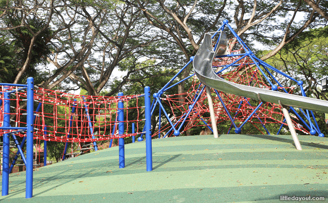
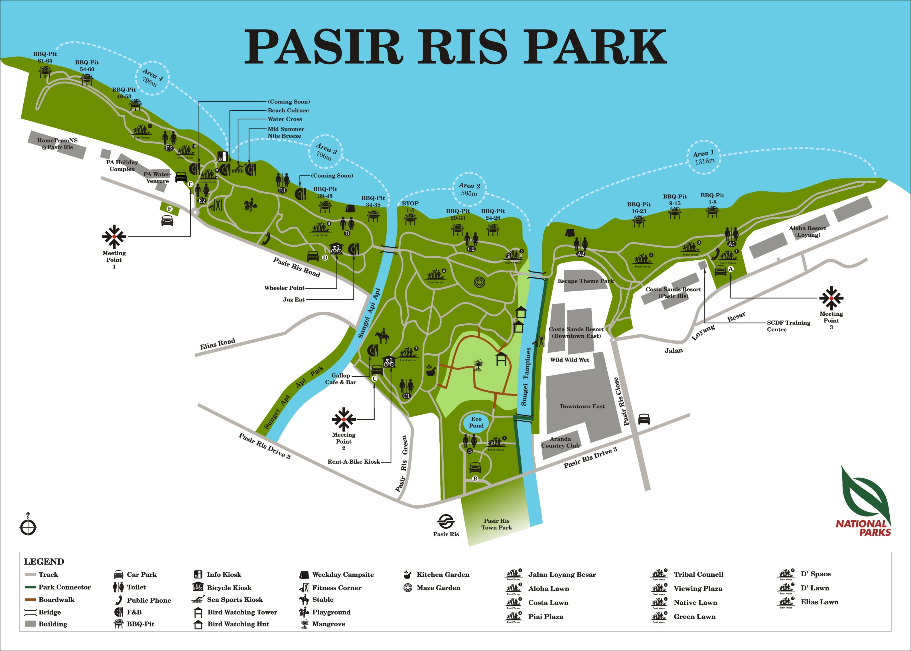
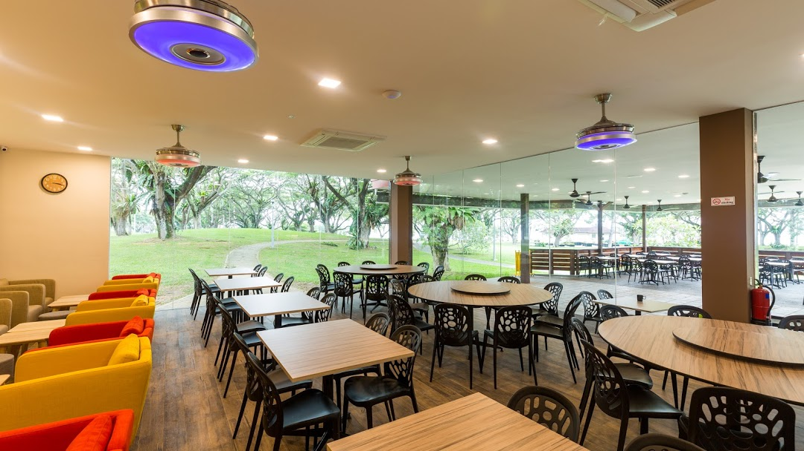

- You need to apply for permission! Do not just bring and pitch your tent wherever you like.


- Here's a video by Stanlig Films on what it looks like.
Some easternly outdoor fun!
Beaches, water activities, skate areas and more to discover!
Did you know that the park’s name was derived from the Malay word ‘Pasir Ris’, which means 'beach bolt-rope', implying a narrow beach? Just when you thought Pasir Ris Park could not get more interesting ;)

Here's some of the activities you can do if you get sick of the land.
You can rent these equipment from Adventure Paddlers. They are located in Pasir Ris park, near the seaside.
Given the park's size, you are bound to find space for some land activities. Below are some examples of what you can do here.
After all the exercising, you'll need some food, right? Fret not, for Pasir Ris Park's got that covered.
Rasa Istimewa Restaurant
Georges @ The Cove
If these are not to your taste, Downtown East shopping mall is a 5-15min walk away (depending which end of the park you're at), nearer the end where the mangrove walk and Area 1 are.